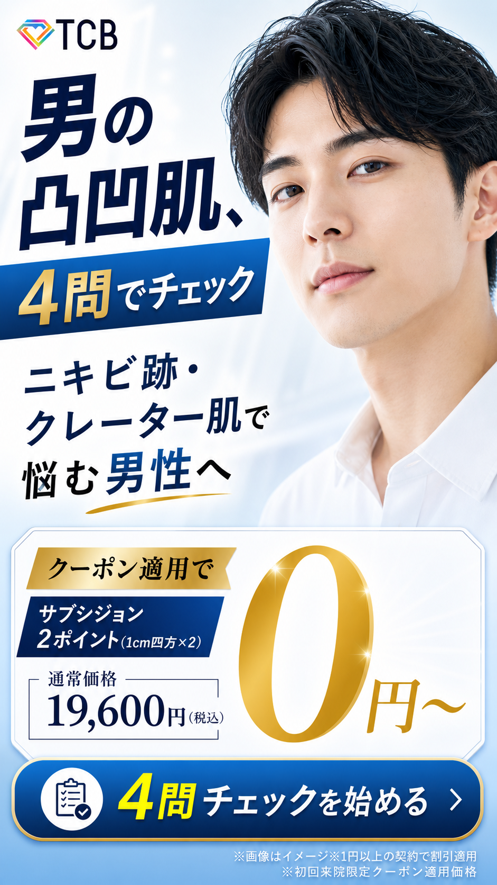
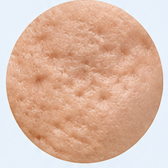
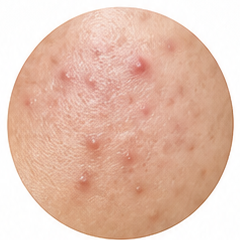
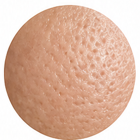
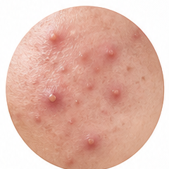
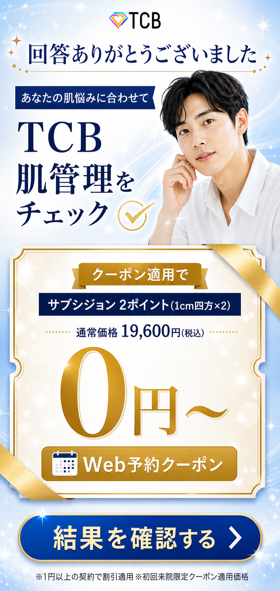
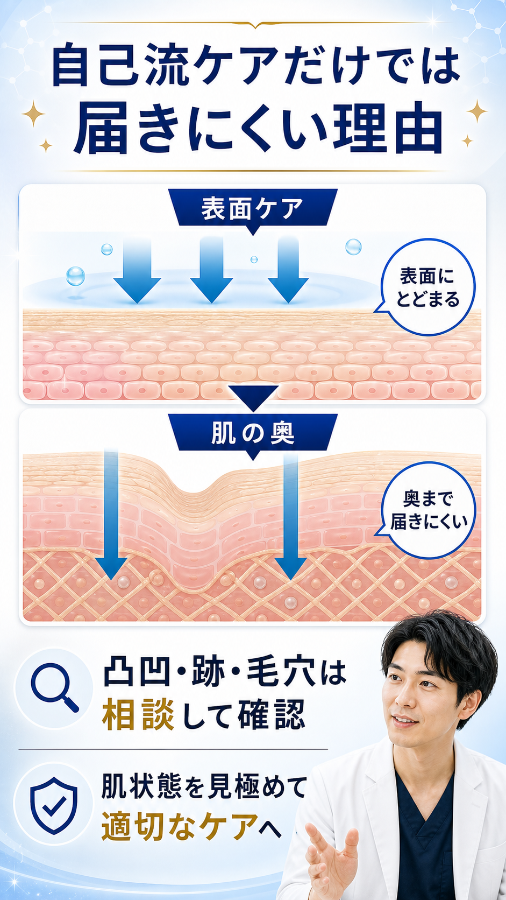
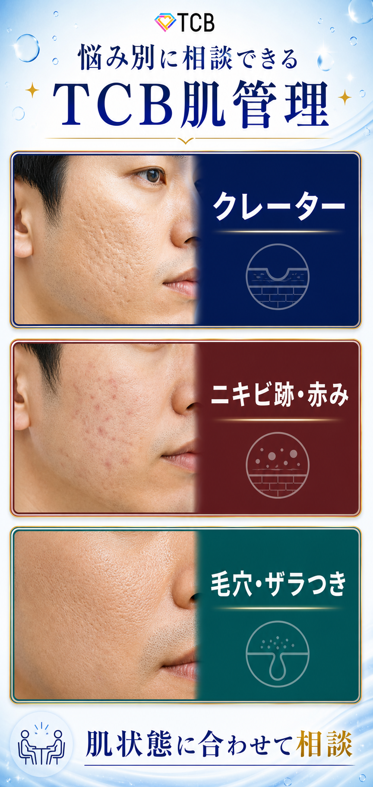
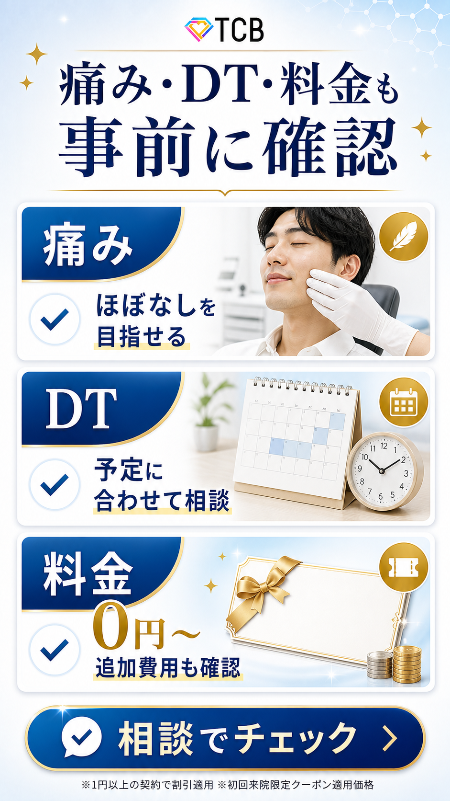
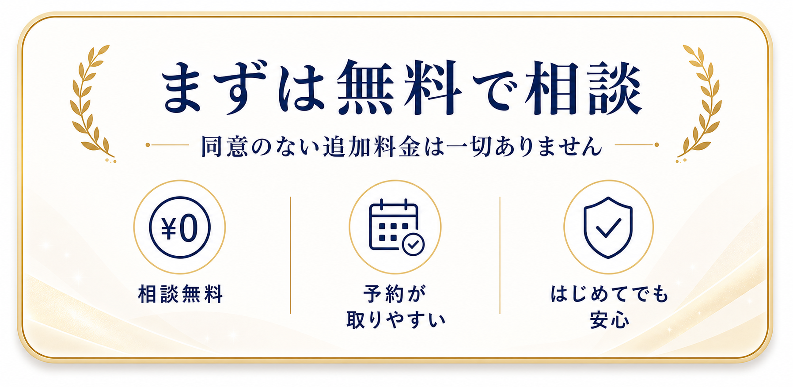

★032_TCB-ニキビ男性_AI記事フィードバックまとめ
AIが作成した記事に対して、人間側の「売れる記事の基準」を漏れなく残し、次回以降のAI記事生成ルールへ変換するための共有資料。
0. この資料の読み方
このHTMLは、通常の「勝ち理由まとめ」ではなく、AIが出した記事制作判断に対するフィードバック資料である。したがって、読者が見るべきポイントは「この記事が良い/悪い」ではなく、「次にAIへ何を守らせるか」である。
1. AIが考えた方向性と具体内容
以下は、今回のAI記事を書くにあたってAIが考えた方向性。これまでの青木さんの解説は、このAI側の設計に対してフィードバックしている面が大きい。
1-1. 最初に立てた仮説・記事の方向性
ニキビ男性記事では、「肌の凸凹・クレーターに悩む男性」を主ターゲットに置いた。既存の勝ち記事「TCB-ニキビ男性 記事015」が直近30日・直近7日ともに粗利/ROASが強く、特に「クレーター」「肌の凸凹」「第一印象」「清潔感」「女性ウケ」「仕事での自信」といった訴求で成果が出ていたため、訴求を大きく変えず、すでに勝っている「肌の凸凹・クレーター」を軸にしつつ、アンケート形式で「自分の悩みを選んでいる感覚」「自分に合う治療を探している感覚」を作る方針にした。
AIが狙ったターゲット
- 肌の凸凹・クレーター・ニキビ跡が長年気になっている男性
- 自己流スキンケアでは変化を感じにくい男性
- 近距離会話・写真・鏡・仕事・初対面などで肌を見られることに抵抗がある男性
- 美容医療に興味はあるが、料金・痛み・ダウンタイム・押し売りに不安がある男性
AIが設計した心理導線
肌の凸凹・クレーターの悩みを自覚させる → 写真・近距離・仕事・初対面など生活上の損失に接続する → 自己流ケアだけでは届きにくい領域があると伝える → TCBなら悩みタイプ別に相談できると期待感を作る → 0円〜・クーポン・無料相談で行動ハードルを下げる。
AI側の解釈では、これは単なる「ニキビ治療の紹介記事」ではなく、「肌の凸凹で第一印象や自信に悩む男性が、自分に合う治療を確認できる記事」として設計したものだった。
1-2. リサーチフローとアウトプット
AIは、AXAD上の既存記事実績を確認し、既存勝ち記事の直近7日・前7日・直近30日の消化・CV・CPA・売上・粗利・ROASを見て、今回の制作対象として優先すべきか判断した。その後、既存勝ち記事の中身を分解し、どの悩みから入り、どの理想未来を見せ、どの不安を潰し、どのタイミングでCTAへつなげているかを整理した。
AIは「肌の凸凹・クレーター」「清潔感」「第一印象」「女性ウケ」「仕事での自信」「0円〜/クーポン」を残すべき勝ち筋と判断した。また遷移先LPでは、ニキビを単一メニューで押さず、クレーター・ニキビ跡・毛穴など悩みタイプ別に治療を見せていたため、フリップアンケの質問も「悩みタイプを選ばせる」構造と相性が良いと判断した。
AIが出した価値仮説
- A案: クレーター/凸凹コンプレックス直撃
- B案: 清潔感/第一印象アップ
- C案: 女性ウケ/モテ・対人視線
最終的には、既存勝ち記事とLPの接続が最も強いA案を主軸にした。ただしB案・C案も捨てず、Q2・Q4で「近距離でも自信」「仕事や初対面で好印象」として取り込んだ。
1-3. 構成・画像作成フェーズでの注意点
AI側がかなり詰めたのは、構成そのものより「画像と実装をどこまで既存フリップの広告体験に近づけるか」だった。フリップアンケの記事は通常の記事LPや診断ページではなく、画像中心の広告体験として作る必要があるため、FV・Qカード・結果クーポン・もっと見る・教育パート・FAQ・最終CTAまで、読者がスマホでテンポよく見られることを重視した。
| AI側の注意点 | 内容 | 青木さんFBとの関係 |
|---|---|---|
| カードごとの心理役割 | Q1は症状選択、Q2は生活上の困りごと、Q3は料金/痛み/DT/相談不安、Q4は理想像を想像させる。 | 役割設計自体は良い。ただし男性向けで女性フリップの型をそのまま借りるのは危険。 |
| 縦長画像化 | 横長資料ではなく、スマホで上から下に読める縦長設計にした。 | 方向性は良い。画像読み込み速度と、文章が自然に読めるかを追加で見る必要がある。 |
| 選択状態の実装 | Image 2.0で未選択/選択を別生成せず、写真は固定し、枠・文字・矢印・チェック・selected背景はHTML/CSS側で固定した。 | 実装判断は良い。読者が迷わず押せるか、ボタン感があるかはさらに改善余地あり。 |
| 参照画像からズレない実装 | TCBロゴは実画像、文字サイズ統一、左揃え、余白、矩形画像、390px幅確認などを重視。 | 細部方針は良い。パート横断で同じ構造を確認する姿勢も必要。 |
| 注釈/表現リスク | 0円〜条件、画像イメージ、個人差、痛み/DT断定回避を画像生成段階から入れる。 | 必要。ただし注釈は入れるだけでなく、CTAや見出しを邪魔しない配置にする。 |
2. 総論: 今回のFBの位置づけ
今回のFBは、AI記事の設計を全否定するものではない。勝ち訴求を大きく変えず、フリップアンケート形式で「自分の悩みを選ぶ」「自分に合う治療を探す」体験を作る方向性は良い。一方で、リサーチ起点、男性向け心理動線、コピーの意味伝達、CTA挙動、不安払拭の順番には修正が必要である。
青木さんの認識では、AIが出した判断のうち「肌の凸凹・クレーター」という勝ち訴求を残し、アンケート形式で見せ方を変えたこと自体は良い。訴求を変えずに見せ方を変えて売れるパターンはあるため、この判断は肯定できる。ただし、既存の勝ち記事を起点にするだけでは、情報が古かったり、今の市況との差別化が難しかったりする。今売れている訴求やターゲットを反映するには、直近1週間あたりで売れているクリエイティブからターゲットと訴求を考える方が確率が高い。
また、今回AIが置いたターゲットは、肌の凸凹・クレーター・ニキビ跡を長年気にしており、美容医療にも興味があり、料金・痛み・ダウンタイムに不安がある男性である。この場合、商品認識度でいうと解決認識から商品認識に近い。すでに悩みを自覚し、美容医療にも興味があるなら、比較検討段階にいる可能性が高い。その場合は、単なる悩み共感だけではなく、USPや競合との差別化を前面に出す記事が理想になる。
ただし、その前提自体も検証が必要である。そもそも美容医療に興味がある男性がどれくらいいるのか、今回仮説で置いたターゲットが本当に存在するのか、存在するとしても十分な数がいるのか、似た人が多いのか。この2軸をターゲット決定時に必ず見る必要がある。
- 既存勝ち記事だけを起点にせず、直近で売れている広告クリエイティブを必ず確認してからターゲットと訴求を決める。
- ターゲットを置く時は「その人は実在するか」「似た人が十分多いか」を確認する。
- 解決認識〜商品認識の読者には、悩み共感だけでなく、比較優位、USP、具体的なオファー、競合との差分を早めに出す。
- 勝ち訴求を残す判断と、今の市況に合わせて変える判断を分ける。
3. 制作判断へのフィードバック
3-1. 既存勝ち記事起点ではなく、直近クリエイティブ起点を入れる
AIは既存勝ち記事015を起点に判断したが、青木さんは「既存勝ち記事より、直近1週間で売れているクリエイティブからターゲットと訴求を考える方が良い」と指摘した。理由は、直近の売れ筋クリエイティブの方が今売れている訴求やターゲットを反映しており、今の市況とズレにくいからである。
今回の記事はニキビ男性の記事で、AIは既存の勝ち記事からターゲットを考えたという判断軸を置いていた。しかし、ここは変えた方がいい。既存の勝ち記事よりも、直近1週間あたりで売れているクリエイティブから記事を考え、ターゲットや訴求を考える方がよい。理由は、その方が今売れている訴求やターゲットを反映した記事が制作でき、より高い確率で売れると考えられるからである。
逆に既存の勝ち記事を起点にすると、どうしても情報が古かったり、今の市況と差別化するのが難しかったりする。基本的には、クリエイティブ中心で訴求を考えた方がよい。
ただし、AIが「すでに勝っている肌の凸凹・クレーターを軸にしつつ、アンケート形式で自分の悩みを選んでいる感覚、自分に合う治療を探している感覚を作る方針」にしたことは、基本的には良い。訴求は変えずに、見せ方を変えて売れるパターンはあるため、この判断は良い。
3-2. 想定ターゲットの認識レベルと検証不足
AIが狙ったターゲットは、長年肌の凸凹・クレーター・ニキビ跡を気にしており、美容医療に興味があり、料金・痛み・DTに不安がある男性だった。青木さんは、このターゲットは解決認識〜商品認識寄りであるため、比較検討段階としてUSPや競合差別化を前面に出すべきだと見た。ただし、そもそもそのターゲットが本当に存在するか、十分な市場規模があるかは確認が必要。
AIが狙ったターゲットは、長年肌の凸凹・クレーター・ニキビ跡が気になっている男性、自己流スキンケアでは変化を感じにくい男性、近距離会話・写真・鏡・仕事・初対面などで肌を見られることに抵抗がある男性、美容医療に興味はあるが料金・痛み・ダウンタイムに不安がある男性だった。
このターゲットは、認知レベルとしてはかなり高い。商品認識度で言えば、解決認識から商品認識に当たる。すでに自分の中で悩みが明確で、かつ美容医療に興味があるなら、いろいろなクリニックを自分で探したり見たりして、比較検討している段階だと考えられる。その場合は、USPやTCBが競合と差別化できることを前面に押していく記事が理想である。
一方で、その仮説をそのまま受け入れる前に、そもそも美容医療に興味がある男性がどれくらいいるのかを考える必要がある。本当にそういう男性が多いのか。ターゲットを決める上では、まず市場規模を考える必要があり、仮説で置いたターゲットが多いのか、本当に存在するのかを確認する必要がある。
一般化すると、ターゲット仮説を置くときは「その人は存在するのか」「存在するとしても十分多いのか、似たような人が多いのか」の2軸が重要である。この2点を意識してほしい。
4. 大枠構造へのフィードバック
4-1. AIが作った心理動線への評価
肌の凸凹・クレーターの悩みを自覚させる → 写真・近距離・仕事・初対面など生活上の損失に接続する → 自己流ケアだけでは届きにくい領域があると伝える → TCBの悩みタイプ別相談で期待感を作る → 0円・クーポン・無料相談で行動ハードルを下げる。
仮に今回の方向性をもとに記事を書くのであれば、まず悩みを自覚させるところは良い。そこから生活上の損失に接続するのも良い。
ただし「自己流ケアだけでは届きにくい領域があると伝える」は少し弱い。理由は、方向性の段階ですでにターゲットが「自己流スキンケアでは変化を感じにくい」と思っている人だからである。長年問題を気にしていて、おそらく自己流の対策をしている。効果を感じていないから、そこでは届きにくい限界があると伝えたところで、少しインパクトが弱そうに感じる。
その理由を書いてあげるのもよいかもしれないが、思ったような共感や反応は得られない可能性がある。ではどうするか。ここはまだ調べていないので断定はできないが、もう少しターゲットに対して言えることがありそう。
例えば、自己流ケア以外の選択肢をいくつか出して比較する。美容医療だけでなく、プロアクティブのような有名商品や、ちゃんとした商品、塗り薬、サプリなど、読者が気になっていそうな選択肢を出して比較する。その上で、いろいろな商材がある中で今回のニキビ治療が、サプリや塗り薬よりも上だと伝える方が、おそらく今回のターゲットに合う。
その後に、複数あるニキビ治療の中でも、TCBだったら0円やクーポンがあり、無料相談できるという流れの方が自然に感じる。
- 自己流ケアの限界を言うだけで終わらせない。
- ターゲットが比較検討段階なら、自己流ケア、市販商品、有名商品、塗り薬、サプリ、美容医療など、読者の頭にある選択肢を並べる。
- その上で、今回の治療がなぜ有力なのか、さらにTCBを選ぶ理由は何かを順番に見せる。
- 「問題提起 → 生活損失 → 選択肢比較 → 美容医療の優位 → TCBの優位 → オファー」の流れを検討する。
4-2. リサーチフローに不足していた視点
AIのリサーチフローでは、AXAD上の既存記事実績を確認し、既存勝ち記事の中身を分析し、遷移先LPを確認していた。記事の数値や勝ち記事の中身を確認したこと、遷移先LPを確認したこと自体は良い。遷移先LPを見るのはすごく良い。
しかし、ここにクリエイティブの判断が入った方がいい。記事だけではなく、クリエイティブがどうなのか、直近でどういう訴求があるのか、ターゲットはどういう人なのか、年齢層やどんな人に受けているのかを見るべきである。
加えて、商品認識度の視点が入るとよい。ターゲットと商材の距離感はどれくらいなのかを見ることで、どの悩みから入り、どの理想の姿を見せ、どういう不安を潰していくかの選択肢が選びやすくなる。
価値仮説として「コンプレックス直撃」「清潔感/第一印象アップ」「女性受け/モテ」を出し、既存勝ち記事とLPの接続が最も強いA案を主軸にしつつ、B案・C案をサブ的に入れたことは、ざっくり良い。ただし、主軸選定には直近クリエイティブと商品認識度の根拠も入れるべきである。
5. フリップアンケ構成・画像作成フェーズへのフィードバック
カードごとの心理役割を明確にする方針は良い。ただし、既存の女性向けフリップアンケート記事の広告体験を、そのまま男性向けに横展開するのは注意が必要。男性と女性では、問いの立て方、選択肢で何を確認させるか、問題解決までの心理動線が異なる。
今回AIが詰めたのは、画像と実装をどこまで既存のフリップアンケート記事の広告体験に近づけるかというところだった。カードごとの心理役割を明確にして、Q1、Q2、Q3、Q4でそれぞれの目的を達成するために伸ばしたという点は、基本的には良い。
ただし、既存のフリップアンケートの広告体験に近づけるというところで、おそらく真似したのは女性向けのフリップアンケート記事だと思う。男性と女性では、問題の解き方や、どういうことを大切にして、どんな目的で選択肢を設けるかが違う。そこは注意が必要。
現時点で、実写の記事の中で男性向けのフリップアンケート記事が大きく売れているものはない。女性の記事をそのまま横展開しても、なかなか成果にはつながらない可能性がある。
過去に男性向けのクマ取り再生注射のフリップアンケート記事を書いたが、それも今のところ成果は芳しくないので、完全な参考にはならない。ただし、その経験から見ても、男性向けフリップアンケートの場合は、女性向けのように最初の問いを「あなたの年代を教えてください」にする記事はあまり見たことがない。
男性向けでは、しょっぱなから問題認識、つまり今どういう問題を抱えているかを聞く方が多い。あるいは「何キロ痩せたいですか？」のように、今の現状と理想の未来を最初に持ってくる。これはPASONAやPASに近い流れで、問題認識、共感またはアジテーションで自分の認識を少し深掘りした後に、ソリューション、解決策を提示する流れである。男性向けならこの流れの方が刺さるのではないか。
- 女性向けで売れたフリップアンケート構造を、男性向けにそのまま移植しない。
- 男性向けでは、年代確認から入るより、問題認識、現状と理想の差分、解決したい状態から入る。
- 男性向けアンケートは「問題認識 → 共感/アジテーション → 解決策提示」の流れを優先検討する。
- フリップUIを借りる場合も、心理動線は商材・性別・CV地点に合わせて作り直す。
6. ファーストビューへのフィードバック

FVは、理想像の男性画像は良い。一方で「男の凸凹肌」と「ニキビ跡・クレーター肌で悩む男性へ」がどちらも自己認識の言葉になっており、役割が重複している。どちらかを理想像・ベネフィットの言葉に変えるべき。
- 悩みコピーとベネフィットコピーを混同しない。
- 画像だけに理想像を背負わせず、言葉でも「どうなれるか」を示す。
- 商品認識度が高い読者には、何をしてくれるものか、何が手に入るかを初手で出す。
- CTAは押せる場所だと直感的に分かる見せ方にする。
ファーストビューで気になるのは、いわゆるベネフィットが文言でないところ。右の男性が理想像で、この理想像はすごく良い。しかし、コピーは「男の凸凹肌、4問でチェック」「ニキビ跡・クレーター肌で悩む男性へ」になっている。
おそらく「ニキビ跡・クレーター肌で悩む男性へ」は、ターゲットに自分ごととして捉えてもらう言葉として入っている。しかし「男の凸凹肌」も役割としては全く同じになっている。つまり、役割が同じ言葉が2つ入ってしまっている。どちらかをベネフィットにしたい。
例えば、モテ訴求なら「イケメン肌」、仕事訴求なら「清潔肌」のような理想像の言葉を出してあげたい。今は、パッと見た時にどういうふうになれるのかが、イケメン男性の画像素材からでしか分からない。もう少しベネフィットの言葉があると、読者が期待感を持って次に進もうと思いやすくなる。
もう一点、これが何をしてくれるものなのかが分からない。この画像だけだと、何を解決できるのか、これは一体何なのか、詳細が分からない。確かに、あえて詳細を隠す方法もある。しかし今回は、ターゲットが商品認識レベルで、かなり詳細に対する知識があり、それを求めている。ここでもったいぶる必要はなく、メリットもない。初手で思い切って詳細や何が手に入るのかを出してあげるのが効果的なターゲットだと思う。
細かいところでは、通常価格19,600円の右に大きく0円〜と書いてあるが、これがつながっているのか別なのかが分からない。19,600円が0円になるなら、矢印や打ち消し線などで関係性を明確にしないと、どちらの価格なのかパッと見で分かりにくい。
「サブシジョン2ポイント（1cm四方×2）」も、書かなければいけないのかもしれないが、意味が分かりにくすぎる。ここは書き方を工夫したい。書く必要があるとしても、分かる言葉を添える。例えば「ニキビ治療」など、誰でも分かる言葉を先に置く。ターゲットでもサブシジョンという言葉をどれくらい分かるのかはリサーチが必要。あえてここで分かる人にだけ出す言葉を提示するメリットがどれくらいあるのか疑問である。本文で書くのは良いが、FVでは誰でも分かる言葉を書いてあげる方が良さそう。
「4問チェックを始める」はボタンになっており、タップすると下に進む構造である。もっと押したくなる見せ方にすると良い。例えばボタンにウィジェットを入れて揺らす、大きくしたり小さくしたりする、ボタンだけ色を変える。緑色など違和感を持つ色にして、ここが押す場所だと直感的に分かる見せ方にすると、押す人が増えると思う。
7. アンケート部分へのフィードバック
7-1. 年代選択
「あなたの年代を教えてください。20代、30代、40代、50代〜」は、先ほど話したことと重複するが、男性向けでは書かなくていいヒットだと思う。ここよりも、まず問題提起を最初にしてあげるのが、思考的にも、いわゆる売れる文章の流れ的にも必然だと思う。
男性向けフリップアンケートでは、初手で年代を聞くより、悩み・現状・理想との差分を聞く。読者の問題認識を起こしてからアンケート体験に入れる。
7-2. Q1: 気になる肌悩み
一番近いものを選んでください

クレーター
ニキビ跡・赤み
毛穴・ザラつき
くり返すニキビ年代選択をした後の「気になる肌悩みは？ 一番近いものを選んでください」というコピーは良い。その中で、クレーター、ニキビ跡・赤み、毛穴・ザラつき、くり返すニキビという選択肢がある。
ここでは戸惑いが発生した可能性がある。ニキビ跡・赤みと、くり返すニキビは統一していいと思う。読者が「これ何が違うんだろう」と分からなくなり、進むのに抵抗や摩擦が発生する可能性がある。
ここは本当に脳死でクリックできるように、選択肢を一つに統合して、クレーター、ニキビ跡・赤み、毛穴・ザラつきの3つにすると分かりやすいと思う。
抽象化すると、パッと見で悩むような選択肢は作ってはいけない。また、MECEかどうか、漏れなくダブりなく選択肢を置くことが大切。さらに、粒度を整えることも大切である。
- アンケート選択肢は、読者が一瞬で選べる粒度にする。
- 似ている選択肢を並べてクリック前に迷わせない。
- MECE、粒度、重複、読者の言葉での分かりやすさを確認する。
7-3. Q2: どんな場面で気になる？
一番イヤな瞬間を選んでください
「どんな場面で気になる？ 一番イヤな瞬間を選んでください」は、「一番イヤな瞬間を選んでください」という文言はなくてもいいかもしれない。あえて「イヤ」ということを伝えることで、現実との比較になってしまい、離脱する可能性もある。サブコピーはいらないかもしれない。
選択肢の「人と近くで話す時」「写真や鏡を見た時」「仕事や初対面の時」は全部良い。選び方も画像も良い。
7-4. Q3: TCBで気になるポイント
気になる条件を選んでください
今回のターゲットで言うなら、まず「TCB」と言わなくてもよさそうに感じる。商品認識で、いろいろな商材を見ている人だと考えるなら、「ニキビ治療で気になるポイントは？」と一段抽象度を上げ、TCBではなく、ニキビ治療という商材に対して気になるポイントを聞いてあげる方が良さそう。
ただし、「TCBで気になるポイントは？」を置くのがどうなのかは少し迷う。かなり前向きな方なので、ここで押しすぎるのはどうなのかとも思ったが、今の認識レベル感ならこれでもいいかもしれない。これで押せる、押したくなる、期待感が抱けるなら良さそうでもある。
画像の選び方として、「0円で相談できる」の画像が少しよく分からない。ここはクーポンで0円と見せる、保証書のような感じでお得感を見せる、信頼感がある見せ方にするなど、画像の見せ方がある。
「痛み・DTに配慮」は、DTが何を指しているかがパッと見で分かるのかが疑問。ちゃんと「ダウンタイム」や「腫れ」と書いてあげた方がいい。「DT」だけだと別の意味に見える可能性がある。「自分に合う治療を相談」は良い。
7-5. Q4: どんな肌印象を目指したい？
変わった後の自分を選んでください
「どんな肌印象を目指したい？」は良い。ただし「変わった後の自分を選んでください」というより、「もし変われたら...」や「こんな姿になれたら...」のように、言い切らないサブコピーの方が良いイメージがある。
「選んでください」は命令されている感じがあり、男性は反発する可能性がありそうだと思った。選択肢の「清潔感のある肌」「近距離でも自信」「仕事や初対面で好印象」は良い。
8. 結果画面・教育前半へのフィードバック
8-1. 全画像に共通する読み込み速度の懸念
全画像に言えることとして、アンケートの画像から下がかなり読み込みに時間がかかる印象がある。画像の読み込みが遅いと、読者が「よく分からないからいいや」と離脱する原因につながる。不信感や広告感の強さにもつながる可能性がある。
ここは、画像がうまく反映されるように、画質なのか容量なのか、何かポイントがあるなら改善したい。
画像中心LPでは、画像が遅いこと自体が離脱要因になる。画質と容量、遅延読み込み、画像サイズ、初回表示の軽さを確認し、スマホ実機相当で読み込み体感を確認する。
8-2. 結果画面

「回答ありがとうございました」「あなたの肌悩みに合わせて TCB肌管理をチェック」という言葉は少し意味が分からない。ここは、意味が分かる言葉かつ期待感がある言葉に変えたい。
「あなたの肌悩みに合わせて」は良いとして、その後の「肌管理をチェック」ではなく、「悩みに合わせて提案」や「様々な解決策を提案」、または「肌悩みに合わせて様々な治療ができますよ」のような言葉にすると伝わりやすい。
抽象化すると、FVやオファー画像など、文章が長い画像は、上から読んで不自然な日本語にならないかが大切。ここは意識してほしい。「あなたの肌悩みに合わせてTCB肌管理をチェック」は意味が通じにくく、パッと見で分からない。
オファーや金額部分は、FVで話した通り、通常価格と0円〜の関係、サブシジョン表記の分かりにくさがある。
「結果を確認する」を押すと遷移先LPへ飛ぶ。しかし、この文言だと読者は下に進むと思いそうである。次の先々LPに飛んでしまうと「飛ぶ気がなかった」「下に進むと思ったのに飛んじゃうんだ」と感じ、離脱につながる可能性がある。この言葉で先々LPに飛ばすのは避けた方がよい。飛ばすなら「解決策を見る」などの方がよい。
「結果を確認する」も「詳しく見る」も、ボタン感が欲しい。FVと同じように、色を変える、揺らす、拡大縮小するウィジェットを追加することが大事。
8-3. 教育1: 自己流ケアだけでは届きにくい理由

「自己流ケアだけでは届きにくい理由」を置くなら、表面ケアは表面に留まる、肌の奥まで届きにくい、という説明の後に「つまり、〇〇」と言ってあげた方がいい。
これだけだと、具体的な理由の説明があった後にまとめがないので、パッと見で分かりにくい。その後に「凸凹・跡・毛穴は相談して確認」「肌状態を見極めて適切なケアへ」と書いてあるが、その一歩手前で読者が届きにくい理由を噛み締めるタイミングが必要である。
そのワンクッションを無視して先に進むと、読者が置いてきぼりになる。表面に留まる、奥まで届きにくい。つまり、例えば「自己流ケアだけでは効果が出にくい」「他にもっと良い方法がある」のような言葉を入れるだけで、読者は「あ、そうなんだ」と踏まえた上で、相談して確認が必要、適切なケアが必要だと思いやすくなる。
8-4. 教育2: 悩み別に相談できるTCB肌管理

「悩み別に相談できるTCB肌管理」という言葉も、TCB肌管理がパッと見で分かりにくい。メリットがなさそうなので、文言を変えてあげたい。TCBのニキビ治療、肌治療のような言葉がよい。
「管理」という言葉は、パッと見で読者がメリットに感じない可能性があるので変えた方がよい。クレーター、ニキビ跡・赤み、毛穴・ザラつきの3つは、おそらく読者が当てはまる。だから、その悩みが治る、解決方向に向かうニュアンスのある言葉にした方がいい。「肌状態に合わせて相談」は良い。
9. 後半教育・FAQ・最終CTAへのフィードバック
9-1. 教育3: 自分で治療名を決めなくてOK
「自分で治療名を決めなくてOK」は意味は分かるが、パッと見でよく分からないので言葉を変えた方がいい。読者はそもそも「自分で治療名を決めなくてはいけない」と思っていない可能性がある。
本当に言いたいのは「全部こちらに任せてくれて大丈夫です」ということなので、それをそのまま言えばいい。例えば「TCBで医師があなたの症状を診察で判断」のような言葉。つまり、あなたの悩みを解決できる治療法を提案しますよ、ということなので、それを書いてあげた方が一瞬で分かる。
このチェックマークの箇条書き、いわゆるブレッドに「肌状態を確認」「原因をチェック」「選択肢を相談」「費用・期間も確認」とあるが、これは事実だけである。ここはなるべくメリット、ベネフィットにしてあげた方がいい。ブレッドは基本的にベネフィットを書く。事実を書くなら、読者が分かりやすく欲求が高まるベネフィットに変える。
例えば「費用・期間を確認」なら「0円〜で受けられる」とか、「選択肢を相談」なら「最適な施術を提案」など。今回の4つの箇条書きは、かぶっているところもあり、あまりメリットに感じないところもある。ここをなるべく「痛みほぼなし」などのメリットにして、読者が見た時に「先に進んでみたい」「気になる」と思える期待感のあるベネフィットを配置するのが正義である。
「あなたに合うプランへ」は、ボタンに見えるので間違えて押す人が多いと思う。ここはボタンっぽいデザインではなく、もっとキラキラした、治る期待感が分かる豪華な見せ方がよい。言葉も「あなたに合うプランへ」より、「あなたの悩みに合う治療法を提案」「悩んでいた悩みが解決する治療法がここに」のように、自分だけに合う、自分はここで治ると分かる文言を選びたい。
9-2. 教育4: 痛み・DT・料金も事前に確認

「痛み・DT・料金も事前に確認」も、同じことを繰り返して言っているので、言い方を変えた方がいいか、言うべきことを変えた方がいいと思う。
今回のターゲットは、料金、痛み、ダウンタイム、保証に不安がある。もし前段のブレッドなどでこれらの不安を払拭できているのであれば、ここでは別の懸念を払拭してあげた方がいい。同じことを言うのではなく、男性が思うであろう「どういうクリニックなんだろう」「実際どういう手順で進んでいくんだろう」「無料カウンセリングでは何をするんだろう」「相談って何？」という不安を解消する。
何も分からずに行った時に呆れられたり怒られたりしないか、押し売りされるのではないか。そういった不安もあると思うので、ここで解決してあげる、払拭してあげる方が、より買わない理由を減らすことにつながる。
「相談でチェック」も文言を変えた方がいい。ボタンの中身は基本的に動詞の方がいい。体言止めで終わるより、「確認する」「チェックする」のように動詞で終わらせた方が読者はクリックしやすい。これはマイクロコピーでも言われている。相談でチェックは意味も分かりにくいので、「無料カウンセリングで確認する」「無料カウンセリングで症状を聞く」など、動詞にすることと、言葉の意味が分かるようにすることが大事である。
9-3. FAQ・最終CTA

よくある質問は基本的に良い。ただし「通える院はありますか？」については、どうせなら全国展開していることや、近くの院を確認できることを言えるので、どこの地域にいても店舗がありますよ、というニュアンスを入れると良い。
「まずは無料で相談」「相談無料」「予約が取りやすい」「初めてでも安心」は、基本的には良い。ただし「初めてでも安心」は、事実というより院側の一方的な意見に見える。ここは、初めてでも安心だと思える要素を入れてあげた方がいい。
例えばデータがあれば、来院者数や相談実績などを出す。多くの人が来ているということは、初めてでも行っている人が多いのだろう、と間接的に思ってもらえる。安心ですよね、と直接言うのはこじつけや院側の一方的な意見になりやすい。安心は読者に思ってもらえばいいことであり、実際に口にはせず、そう思ってもらえる要素をここに書くイメージである。
「無料カウンセリングの空き枠をチェック」も、「チェックする」と動詞にしてあげた方がいい。
10. 次回AI記事生成ルール
ここからは、今回のFBを次回以降のAI記事生成で使える命令形のルールに変換する。
- 既存勝ち記事だけで訴求を決めるな。直近1週間で売れているクリエイティブを確認し、今売れているターゲットと訴求を先に見る。
- ターゲット仮説は「その人が存在するか」「似た人が十分多いか」の2軸で確認してから採用する。
- 解決認識〜商品認識の読者には、悩み共感だけでなく、USP、比較優位、競合差別化、具体的なオファーを早めに出す。
- 男性向けフリップアンケートでは、年代質問から入らず、問題認識、現状の不満、理想との差分から入る。
- 女性向けフリップの型をそのまま横展開するな。性別、商材、CV地点、読者の認知度に合わせて心理動線を作り直す。
- 自己流ケアの限界を言うだけで終わらせるな。読者が検討しそうな市販商品、塗り薬、サプリ、美容医療などの選択肢比較を入れる。
- FVでは悩みコピーとベネフィットコピーを分ける。悩みを2回言わず、どうなれるかを言葉で見せる。
- 商品認識度が高い読者には、何をしてくれるものか、どんな治療/解決策なのか、何が手に入るのかを初手で隠さず出す。
- 専門用語をFVにそのまま置くな。必要なら「ニキビ治療」「凸凹肌治療」など誰でも分かる言葉を先に置き、専門名は本文で説明する。
- 価格表示は、通常価格と0円〜の関係を矢印、打ち消し線、配置で一瞬で分かるようにする。
- CTAは押せる場所だと直感的に分かるようにする。色、動き、余白、ボタン形状でクリック対象を明確にする。
- アンケート選択肢は、パッと見で迷わない粒度にする。重複、粒度ズレ、MECE崩れを確認する。
- 「イヤな瞬間を選んでください」のように現実比較を強くしすぎる文言は、離脱リスクがあるため必要性を確認する。
- 「TCBで気になるポイント」と言う前に、読者の認識度に応じて「ニキビ治療で気になるポイント」と抽象度を上げる案を検討する。
- DTのような略語をそのまま使うな。ダウンタイム、腫れなど、読者が一瞬で分かる言葉にする。
- 「選んでください」のような命令感が強いサブコピーは、男性向けでは反発の可能性がある。余白のある言い方に変える。
- 画像中心LPでは、画像読み込み速度を必ず確認する。遅い画像は離脱、不信感、広告感の強さにつながる。
- 画像内コピーは上から読んで自然な日本語になるか確認する。「TCB肌管理をチェック」のような意味が曖昧な言葉を置かない。
- 外部LPへ飛ぶCTAに「結果を確認する」を使うな。下に進むと誤解される文言は避け、「解決策を見る」「無料カウンセリングで確認する」など行動が分かる言葉にする。
- 教育画像では、説明の後に「つまり」の一文を入れ、読者が理解を噛み締めるワンクッションを置く。
- 「肌管理」「プラン」など、読者がメリットを感じにくい抽象語は避ける。ニキビ治療、肌治療、治療法提案など具体語にする。
- ブレッドには事実だけでなくベネフィットを書く。読者が「欲しい」「気になる」「進みたい」と思う言葉にする。
- CTAではない締めコピーをボタン風にしない。誤タップを避け、期待感が高まる装飾にする。
- 同じ不安払拭を何度も繰り返すな。料金/痛み/DTを処理したら、次は相談内容、押し売り、手順、初回不安など別の買わない理由を潰す。
- ボタン文言はできるだけ動詞で終わらせる。「チェック」ではなく「チェックする」「確認する」にする。
- 安心は直接言い切るより、安心だと思える事実で伝える。来院者数、相談実績、流れ、対応範囲などを置く。
11. 次回制作チェックリスト
- 直近1週間で売れているクリエイティブを確認したか。
- 既存勝ち記事だけでなく、今の市況と訴求の変化を確認したか。
- ターゲットは実在し、似た人が十分多いと言えるか。
- ターゲットの商品認識度を仮置きしたか。
- 解決認識〜商品認識なら、USPや競合差別化を早めに見せているか。
- 女性向けフリップの心理動線を男性向けにそのまま流用していないか。
- 最初の質問が、問題認識や理想との差分に接続しているか。
- アンケート選択肢は重複せず、粒度が揃っているか。
- 選択肢を見て読者が迷わずクリックできるか。
- FVに悩みコピーだけでなく、理想像・ベネフィットの言葉があるか。
- FVで何をしてくれる記事/治療/オファーなのかが分かるか。
- 専門用語を置く場合、読者が理解できる言葉を添えているか。
- 通常価格と0円〜の関係が一瞬で分かるか。
- CTAが押せる場所だと視覚的に分かるか。
- 外部遷移するCTA文言が、読者の期待とズレていないか。
- 画像の読み込み速度をスマホ幅で確認したか。
- 画像内コピーを上から読んで自然な日本語になっているか。
- 教育パートで「つまり」の一文を置き、読者の理解をつないでいるか。
- 不安払拭が同じ内容の繰り返しになっていないか。
- 料金/痛み/DT以外に、相談内容、押し売り、手順、初回不安を潰しているか。
- ブレッドに事実だけでなく、読者が欲しくなるベネフィットを書いているか。
- 安心訴求を主観で言わず、安心できる事実で示しているか。
- ボタン文言が動詞で終わっているか。
12. 未確認・次回検証事項
今回のFB内で、青木さんが断定せず「調べていない」「確認が必要」とした点は、次回の制作前に検証する。
- 未確認 直近1週間で売れているニキビ男性クリエイティブの訴求、ターゲット、年齢層、媒体別の傾向。
- 未確認 「美容医療に興味がある男性」がどれくらい存在するか、似たターゲットが十分多いか。
- 未確認 男性向けフリップアンケートで大きく売れている実写記事の有無。
- 未確認 サブシジョンという言葉を今回のターゲットが理解しているか。
- 未確認 自己流ケア以外に読者が比較している選択肢。市販商品、プロアクティブ系、塗り薬、サプリ、美容医療など。
- 未確認 画像読み込みが実際にどれくらい遅いか。スマホ実機相当の体感、画像容量、読み込み順。
- 未確認 「初めてでも安心」を支える来院者数、相談実績、初回来院者データなどの根拠。